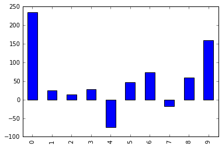
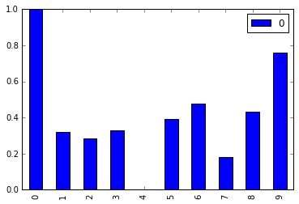

Normalize A Column In Pandas
Based on: Sandman via StackOverflow.
Preliminaries
# Import required modules
import pandas as pd
from sklearn import preprocessing
# Set charts to view inline
%matplotlib inline
Create Unnormalized Data
# Create an example dataframe with a column of unnormalized data
data = {'score': [234,24,14,27,-74,46,73,-18,59,160]}
df = pd.DataFrame(data)
df
| score | |
|---|---|
| 0 | 234 |
| 1 | 24 |
| 2 | 14 |
| 3 | 27 |
| 4 | -74 |
| 5 | 46 |
| 6 | 73 |
| 7 | -18 |
| 8 | 59 |
| 9 | 160 |
# View the unnormalized data
df['score'].plot(kind='bar')
<matplotlib.axes._subplots.AxesSubplot at 0x113a84eb8>

Normalize The Column
# Create x, where x the 'scores' column's values as floats
x = df['score'].values.astype(float)
# Create a minimum and maximum processor object
min_max_scaler = preprocessing.MinMaxScaler()
# Create an object to transform the data to fit minmax processor
x_scaled = min_max_scaler.fit_transform(x)
# Run the normalizer on the dataframe
df_normalized = pd.DataFrame(x_scaled)
/Users/chrisralbon/anaconda/lib/python3.5/site-packages/sklearn/preprocessing/data.py:324: DeprecationWarning: Passing 1d arrays as data is deprecated in 0.17 and will raise ValueError in 0.19. Reshape your data either using X.reshape(-1, 1) if your data has a single feature or X.reshape(1, -1) if it contains a single sample.
warnings.warn(DEPRECATION_MSG_1D, DeprecationWarning)
/Users/chrisralbon/anaconda/lib/python3.5/site-packages/sklearn/preprocessing/data.py:359: DeprecationWarning: Passing 1d arrays as data is deprecated in 0.17 and will raise ValueError in 0.19. Reshape your data either using X.reshape(-1, 1) if your data has a single feature or X.reshape(1, -1) if it contains a single sample.
warnings.warn(DEPRECATION_MSG_1D, DeprecationWarning)
# View the dataframe
df_normalized
| 0 | |
|---|---|
| 0 | 1.000000 |
| 1 | 0.318182 |
| 2 | 0.285714 |
| 3 | 0.327922 |
| 4 | 0.000000 |
| 5 | 0.389610 |
| 6 | 0.477273 |
| 7 | 0.181818 |
| 8 | 0.431818 |
| 9 | 0.759740 |
# Plot the dataframe
df_normalized.plot(kind='bar')
<matplotlib.axes._subplots.AxesSubplot at 0x115f11278>
